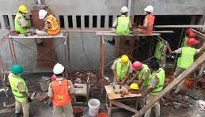

DEFINISI TKP & SMKN 1 DENPASAR
Jurusan Teknik Konstruksi Perumahan(TKP)
Jurusan Teknik Konstruksi Perumahan(TKP) adalah salah satu program pendidikan di SMK Negeri 1 Denpasar yang berfokus pada cabang ilmu yang mempelajari segala hal yang berkaitan dengan perencanaan, pelaksanaan, dan pengawasan pembangunan perumahan. Hal ini mencakup berbagai aspek teknik dan manajerial yang diperlukan untuk merancang dan membangun rumah atau kompleks perumahan secara efisien dan aman. Teknik ini melibatkan penggunaan berbagai bahan bangunan, peralatan, serta teknologi yang tepat untuk menciptakan hunian yang berkualitas, sesuai dengan standar keselamatan, kenyamanan, dan keberlanjutan.
SMK Negeri 1 Denpasar
SMK Negeri 1 Denpasar adalah SMK Negeri yang memiliki banyak prestasi baik itu prestasi akademik maupun non-akademik. Dari tingkat provinsi bahkan tingkat internasional. LKS atau Lomba Kompetensi Siswa merupakan salah satu kegiatan lomba yang membuktikan prestasi SMK Negeri 1 Denpasar. Hal tersebut dapat dilihat dari raihan juara yang didominasi oleh SMK Negeri 1 Denpasar dalam ajang Lomba Kompetensi Siswa SMK Provinsi Bali.